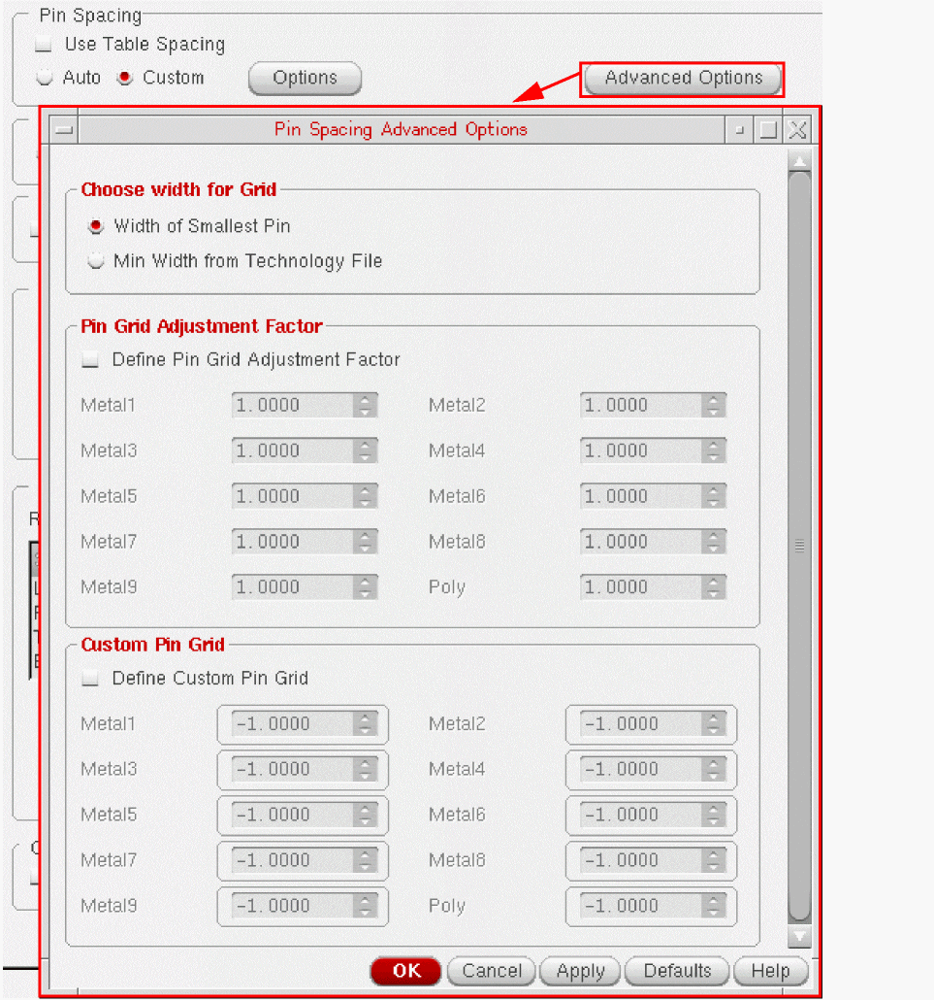

Specifying Pin Spacing for Pin Optimization
While placing the pins in a design, Pin Optimizer should maintain a minimum spacing between the pins. The Pin Spacing section provides various options to specify pin spacing values either from the technology file or by letting you enter the values manually. Pin Optimization is layer aware. Therefore, you can use or define separate pin spacing values for each layer.
-
Choose Floorplan – Pin Optimization to display the Pin Optimization tab of the Pin Placement form.
In Layout EXL and higher tiers, choose Plan – Pin Planning – Pin Optimization. - Set Mode to All or Selected depending on whether all or some of the pins are selected in the layout.
- In the Pin Spacing section, you can define pin spacing values for the various layers in the current design.
- Select Use Table Spacing to scale up the spacing values as per the table spacing rules defined for different widths of the pins.
-
Click Options to display the Pin Spacing Options form.
- Choose one of the following Spacing Type options: line-line, line-via, via-via, or specify.
-
To specify the same pin spacing value for all layers, enter the value in the text box next to the specify option and click Update All.
-
To specify different pin spacing values for each layer, type the values in the corresponding text boxes. Pin spacing values cannot be smaller than the
minSpacingor thetableSpacingvalue specified in the technology file. -
Click Defaults to change the form values to the default values, which correspond to the original factory settings.
Pin Optimizer checks for pin overlaps and the validity of the spacing value on each layer. -
Click the Advanced Options button to display the Pin Spacing Advanced Options form.
Use options in the Pin Spacing Advanced Options form to define pin grids. A pin grid defines the points at which pins need to be placed. Each layer has a separate pin grid. Typically, the pin grid value is the sum of the layer spacing value and the pin width value. - Select one of the following options to define the pin grid: Choose width for Grid, Pin Grid Adjustment Factor, or Custom Pin Grid.
- Click Defaults to change the form values to the default values, which correspond to the original factory settings.
Related Topics
Return to top